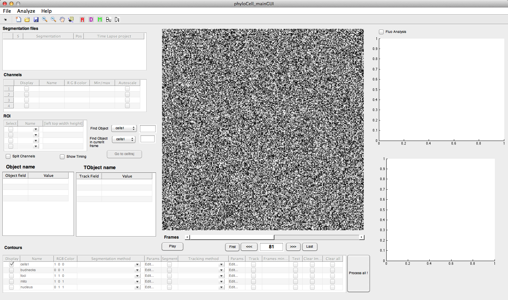
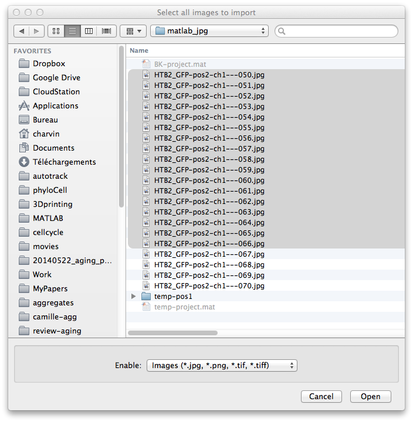
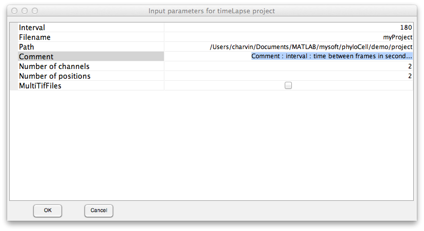
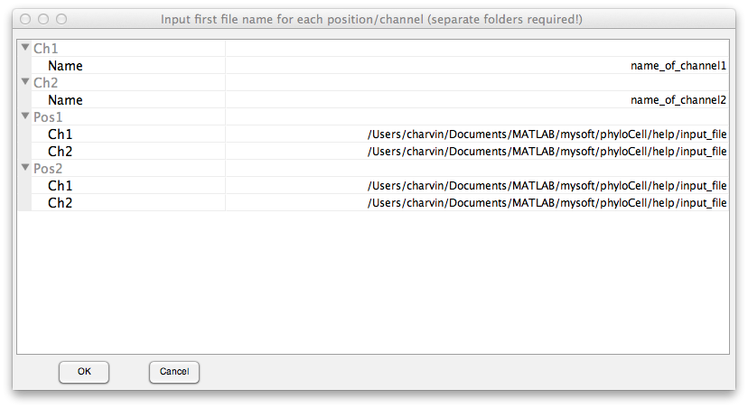
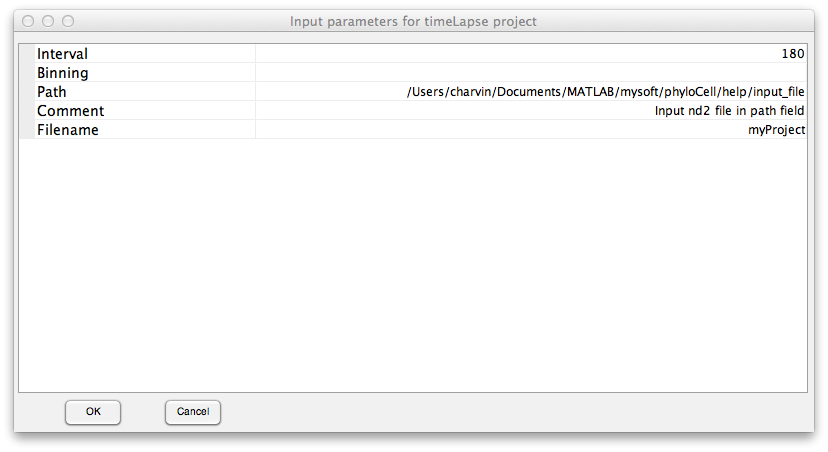

Loading images and generating segmentation projects with PhyloCell
Contents
Introduction
The structure of project of PhyloCell is as follows : a project file contains all relevant information regarding a time lapse movie. In particular, it contains all the links to images files for each position and channels in a multiposition acquisition.
PhyloCell can generate a project file in several ways:
- Loading a list of images : in this case, a temp project is generated automatically in the folder in which the images are stored
- Generating a project using a specific GUI
- Converting ND2 Nikon files to PhyloCell project
- Custom conversion to PhyloCell project
Launch phyloCell
phyloCell_mainGUI;
Loading a list of images
Go to: File > Quick Load Images...
Select the list of images of interest. Alternatively, you can select a single multi-image tif file. Press OK.

PhyloCell will create a temp project in the current folder and display the project into the main GUI window.
Creating a phyloCell project from images
Go to: File > New Project...
Selct appropriate parameter : project name and output path, interval between frames, number of channels and multipoint positions used during acquisition.

Press OK. In the next window, enter the names of the channels and the path to images that correspond to each channel/position. You just need to specify one image. The program will take all the files in the specified folder with same extension as the selected files. Therefore, the collections of iles for each specific position/channels should all be in separate folders. This rule does not apply if multi-tiff files are selected for each channel/position.

PhyloCell will then create the project by copying the images into specific folders (which can take some time depdening on the number of images) and then display the project in main GUI window.
Converting a Nikon .nd2 file to a phyloCell project
Go to: File > Convert Nikon .nd2 file to phyloCell...
Enter the path to the nd2 file in the 'Path' field. You can specify a different output project name under the field 'fileName'. 'Binning' corresponds to the binning used for each fluorescence channel. If you have 3 channels with binning 1x1, 2x2, and 4x4, then enters : [1 2 4].

PhyloCell will then create the project by copying the images into specific folders (which can take some time depdening on the number of images) and then display the project in main GUI window.
Custom conversion to PhyloCell project
If you wish to develop a routine that converts your dataset into a phyloCell project at the commande line, you shoul look into the following function :
edit phy_createTimeLapseProject.m
which is the core function used in the sections above. This function basically generates the architecture of a phyloCell project (files and folders) from lists of images.